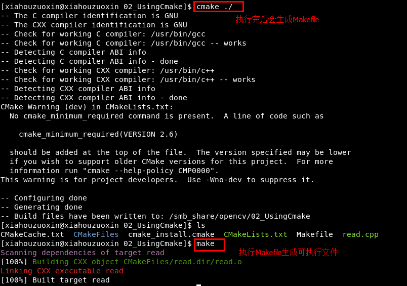

/*
* FileName : read.cpp
* Author : xiahouzuoxin @163.com
* Version : v1.0
* Date : Tue 13 May 2014 07:34:25 PM CST
* Brief :
*
* Copyright (C) MICL,USTB
*/
#include <cv.h>
#include <highgui.h>
using namespace cv;
using namespace std;
int main(int argc, char **argv)
{
Mat img;
img = imread(argv[1], 1);
if (argc != 2 || !img.data) {
cout<<"No image data.\n"<<endl;
return -1;
}
namedWindow("Display Image", CV_WINDOW_AUTOSIZE);
imshow("Display Image", img);
waitKey(0);
return 0;
}这就是OpenCV基础篇之读取显示图片中使用的代码
如果没有安装CMake，则使用下面命令安装
yum install cmakeCMake是一款工程管理软件，比Makefile平台迁移性更好，通过CMake能自动生成Makefile。用于本程序的CMake文件内容如下：
project(read)
find_package(OpenCV REQUIRED)
add_executable(read read)
target_link_libraries(read ${OpenCV_LIBS})将上述内容保存到文件名为CMakeLists.txt（必须是这个文件名）的文件中，依次执行
cmake ./
makecmake命令直接生成Makefile，通过Makefile生成可执行文件（这也就是为什么cmake平台迁移性好，不同的平台能生成对应的Makefile，很容易迁移到Windows）。
